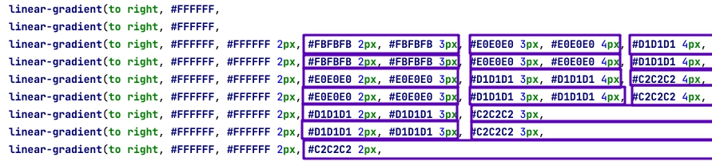
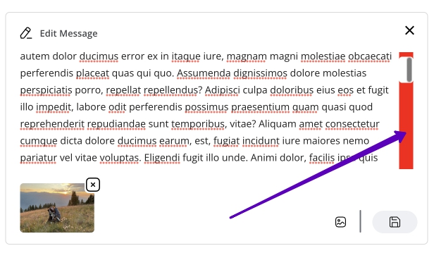

.css-scrollbar
This is CSS only solution for scrollbar customization. This works a lot much smoother than .scrollbar (JS solution) so it can be used in areas where JS doesn't work well.
See example:
This solution is based on ::-webkit-scrollbar and ::-webkit-scrollbar-thumb pseudo elements so it is greatly limited. See documentation.
Limitations
One of the limitations is that width of thumb must be equal to the width of scrollbar. So we can't add any spacing around thumb, and we can't make it asymmetric. Also, it always takes some spacing on the page and can't fly over content.
The trick here is to do a pixel art on scrollbar using precise gradients. Notice this zoomed image. We use 4 different shades of gray:
Each of these shades at the corner drawn by an extra layer of the gradient:

Desktop only
This solution is coded inside of (min-width: 768px) media query. It will only works in desktop browsers which is intentional. On smartphones we don't have issues with scrollbars at all.
Firefox
Notice that this solution is based on custom properties with webkit prefix in it. So it works in webkit browser only (Edge included). Firefox won't get this code.
The best we can do for firefox is to use new scrollbar-color property which is still better than nothing. But keep in mind some other tricks below won't work in Firefox.
Sizes
It's important to keep sizes of this scroll in mind. Scrollbar width is 11px and thumb width is 7px. It is the same size to default macos scrollbar and same to .scrollbar component
Use cases
Because this scrollbar takes 11px of page spacing it shouldn't be used in columns where content is centered.
Neither it will look good in the columns where content uses background because this scrollbar must have white background.
But it fit perfectly into textareas:
Sizes override and asymmetric case
There is a complicated .typing component with a tricky textarea inside. In addition to complications with sizes of this textarea it also has expanding and mentions functionality on it which is done by calling jquery plugin at the moment. Running one more plugin for faking scrollbars will make it even more complicated so this is where we go with .css-scrollbar:

Notice how this selector works:
.typing__message.css-scrollbar::-webkit-scrollbar {
width: 20px;
}
It is expanding scrollable area like so: 
Scrollbar will only appear when it's needed (long text) and it will give a necessary inner paddings. Also, it will expand scrollbar area making it more comfortable to drag.
This is possible because background gradient is aligned to the right so adding width to scrollbar will add free spacing on the left side of it.